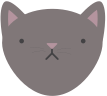

Objetivos de este encuentro
 Recapitular encuentros anteriores
Recapitular encuentros anteriores
Capítulo 8: User feedback
Estructura básica

Basic reactivity
 

Programación declarativa

Shiny usa programación declarativa
No le indicamos qué hacer sino qué queremos lograr.
Son aplicaciones perezosas: solo actualizan los outputs visibles, y solo cuando es necesario.

Si no está vinculado a una salida visible el código puede no ejecutarse nunca